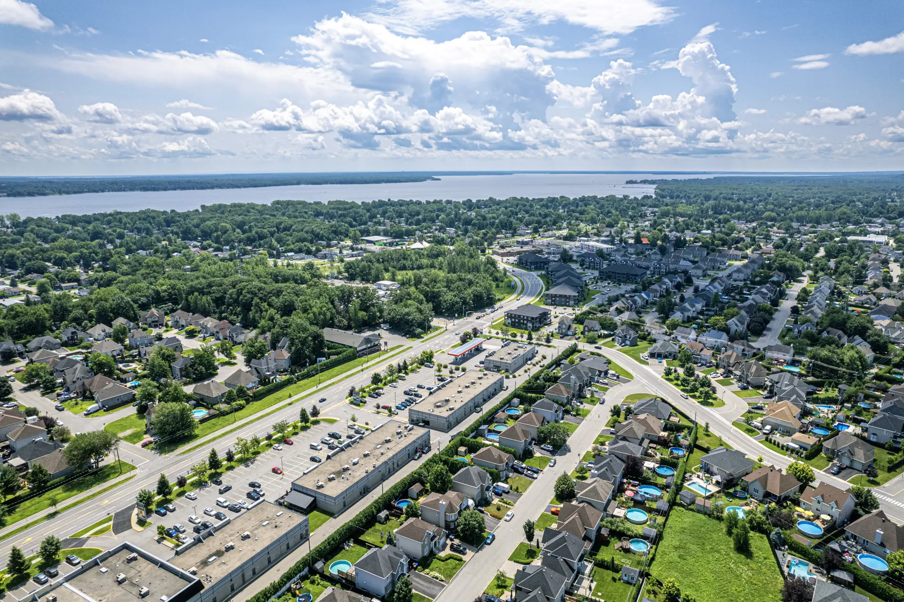

Courtier immobilier résidentiel · Permis OACIQ D9876
Geneviève Marchand, courtier immobilier à Deux-Montagnes
Geneviève Marchand est courtier immobilier résidentiel chez RE/MAX Crystal, active à Deux-Montagnes depuis 2011, ainsi qu'à Saint-Eustache et Sainte-Marthe-sur-le-Lac. Native du secteur Grand-Moulin, elle a réalisé environ 320 transactions, surtout auprès de familles et de premiers acheteurs.
- Transactions depuis 2011
- 320+
- De courtage dans le secteur
- 15 ans
- Pour vous répondre, 7 jours sur 7
- < 2 h
- Secteurs
- Deux-Montagnes, Saint-Eustache, Sainte-Marthe-sur-le-Lac
- Langues
- Français, anglais
- Bureau d'attache
- RE/MAX Crystal, Saint-Eustache
- Reconnaissances
- Club 100 % RE/MAX 2019 à 2025, Palme d'excellence 2023
Huit ans de finance avant le courtage
Une courtière qui traduit les chiffres, les clauses et les délais, et qui répond elle-même au téléphone.
Avant de devenir courtière, Geneviève Marchand a passé huit ans comme conseillère en financement hypothécaire dans une caisse de Saint-Eustache.
C'est derrière ce bureau qu'elle a compris une chose qui guide encore sa pratique : la plupart des gens n'ont pas besoin qu'on leur vende quoi que ce soit. Ils ont besoin que quelqu'un leur traduise ce qui se passe, de la préapprobation aux clauses de l'offre jusqu'aux délais du notaire. Elle a obtenu son permis en 2011 pour faire exactement ce travail, du premier café à la remise des clés.
Sa méthode tient en une phrase qu'elle répète à chaque nouveau client : « Je vous dis ce que je ferais à votre place, même quand ce n'est pas ce que vous espérez entendre. » Si une maison a besoin de 2 000 $ de peinture avant la séance photo, elle le dit. Si le condo convoité est affiché au-dessus de sa valeur, elle le dit aussi, chiffres comparables à l'appui, dans les 48 heures qui suivent la première rencontre.
Geneviève travaille seule, sans adjointe, et c'est un choix : la personne qui répond au téléphone, celle qui fait visiter et celle qui négocie l'offre sont la même. Ses clients sont d'abord des familles des Basses-Laurentides et des premiers acheteurs, qui forment près de la moitié de sa clientèle. Son passé bancaire fait la différence auprès d'eux : mise de fonds, droits de mutation et RAP sont expliqués avant même la première visite. La majorité de ses mandats lui viennent de références d'anciens clients, après une trentaine de transactions par année depuis quinze ans.
Née et élevée à Deux-Montagnes, à trois rues de la gare Grand-Moulin, elle y élève aujourd'hui ses deux filles, qui fréquentent l'école des Mésanges. Quand un acheteur demande où sont les parcs avec jeux d'eau ou quelle rue reste tranquille le soir, la réponse vient de mémoire.
Trois engagements vérifiables
Des promesses qu'on peut mesurer dès le premier appel.
- < 2 h
Une réponse le jour même
Moins de 2 heures, 7 jours sur 7. C'est elle qui répond, pas une boîte vocale d'équipe.
- Inclus
Photos et vidéo professionnelles
Dans chaque mandat de vente, sans supplément.
- 48 h
Une analyse comparative complète
Remise dans les 48 heures qui suivent la première rencontre.
Ville principale
Deux-Montagnes
Sa ville natale, et le cœur de sa pratique depuis 2011.
Deux-Montagnes vue de l'intérieur
Le marché a changé de vitesse avec le REM, et certaines rues en profitent beaucoup plus que d'autres. Voici ce que Geneviève observe sur le terrain.
L'effet REM est réel, mais inégal
Depuis la mise en service, les maisons à distance de marche des gares Deux-Montagnes et Grand-Moulin partent souvent en moins de deux semaines, portées par les acheteurs venus de Montréal. Quelques rues plus loin, les délais redeviennent normaux. D'où l'importance d'évaluer rue par rue, pas ville par ville.
Le bord de l'eau reste sous-estimé
Les secteurs riverains du lac des Deux Montagnes offrent encore un rapport qualité-prix que Rosemère n'a plus. Pour les acheteurs qui veulent l'eau sans le prix des rives sud, c'est le meilleur compromis des Basses-Laurentides.
Deux marchés voisins à suivre
À Sainte-Marthe-sur-le-Lac, les jeunes familles ciblent le secteur des Promenades, près de la nouvelle école. À Saint-Eustache, le Vieux-Saint-Eustache attire ceux qui cherchent du cachet à 25 minutes de Montréal. Geneviève suit ces trois marchés chaque semaine.
Sa ville natale et le cœur de sa pratique : gare REM, bord de l'eau, quartier Grand-Moulin.
Lire le guide de Deux-Montagnes Aussi desservieSaint-EustacheSon bureau d'attache et le pôle régional, du Vieux-Saint-Eustache aux nouveaux quartiers.
Lire le guide
Aussi desservieSainte-Marthe-sur-le-LacLe marché des jeunes familles, entre les Promenades et le bord du lac.
Lire le guideVendre ou acheter avec elle
Un mandat complet du prix juste jusqu'au notaire, et un accompagnement pensé pour les familles et les premiers acheteurs.
Vendeurs
Un mandat complet, avec un rapport d'activité chaque mois.
- Évaluation gratuite de la valeur marchande, sur place
- Analyse comparative de marché remise en 48 heures
- Photos et vidéo professionnelles incluses
- Mise en marché complète : Centris et réseaux sociaux
- Rapport mensuel du marché autour de votre propriété
Acheteurs
Les finances comprises, avant même la première visite.
- Préparation financière : préapprobation, mise de fonds, RAP
- Sélection ciblée selon le secteur, l'école et le budget
- Visites accompagnées, en personne ou en vidéo
- Négociation et vérifications jusqu'à la signature
- Accompagnement en relocalisation, même à distance
Ses clients, dans leurs mots
Trois familles, trois situations : une vente rapide, un premier achat, une relocalisation à distance.
Geneviève a vendu notre maison de la rue du Lac en 9 jours, 12 000 $ au-dessus du prix demandé. Elle nous a expliqué chaque étape et on n'a jamais senti de pression.
Premiers acheteurs, on ne connaissait rien. Elle a répondu à nos 100 questions, même un dimanche soir, et nous a trouvé notre jumelé à Sainte-Marthe dans notre budget.
Relocalisés de Québec en plein hiver, tout s'est fait à distance : visites en vidéo, documents électroniques, remise des clés impeccable. Une vraie professionnelle.
Ce qu'on lui demande chaque semaine
Les vraies questions reçues au téléphone, avec des réponses qui tiennent seules.
Combien vaut ma maison à Deux-Montagnes en ce moment ?
La valeur dépend surtout de votre secteur et de la distance des gares du REM. Geneviève Marchand offre une évaluation gratuite sur place : vous recevez en 48 heures une fourchette de prix appuyée sur les ventes comparables des 6 derniers mois à Deux-Montagnes.
Le REM a-t-il vraiment fait monter les prix à Deux-Montagnes ?
Oui, surtout à distance de marche des gares Deux-Montagnes et Grand-Moulin : depuis la mise en service du REM, les propriétés bien situées s'y vendent plus rapidement que la moyenne du secteur. L'effet est réel, mais il varie beaucoup d'une rue à l'autre.
Combien de temps faut-il pour vendre dans le secteur ?
Une propriété bien préparée et affichée au bon prix se vend généralement en 2 à 5 semaines à Deux-Montagnes et à Sainte-Marthe-sur-le-Lac. Une propriété surévaluée peut rester des mois sur le marché, c'est pourquoi Geneviève Marchand est franche sur le prix dès le départ.
Travaille-t-elle avec les premiers acheteurs ?
Oui : les premiers acheteurs forment près de la moitié de la clientèle de Geneviève Marchand. Ancienne conseillère en financement hypothécaire, elle explique la préapprobation, la mise de fonds, les droits de mutation et les programmes comme le RAP avant même la première visite.
Qu'est-ce qui est inclus dans un mandat de vente ?
Chaque mandat de vente avec Geneviève Marchand inclut les photos et la vidéo professionnelles, la mise en marché sur Centris et les réseaux sociaux, les visites accompagnées, la négociation et le suivi jusqu'au notaire, plus un rapport mensuel sur l'activité du marché autour de votre propriété.
Ses propriétés à vendre
Les inscriptions de Geneviève Marchand sont affichées sur Centris et mises à jour en temps réel.
Que vaut votre propriété aujourd'hui ?
Une évaluation gratuite, sur place et sans engagement, avec une fourchette de prix documentée dans les 48 heures.
- Courtier
- Geneviève Marchand, courtier immobilier résidentiel
Permis OACIQ D9876 - Bureau
- RE/MAX Crystal
479 boul. Arthur-Sauvé
Saint-Eustache (QC) J7P 2B3 - Téléphones
- Cellulaire : 450 555-0189
Bureau : 450 472-7220